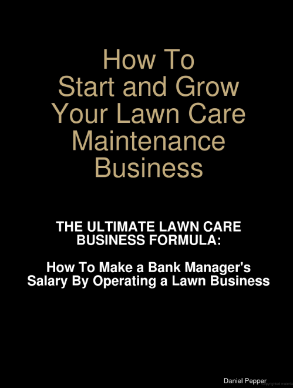
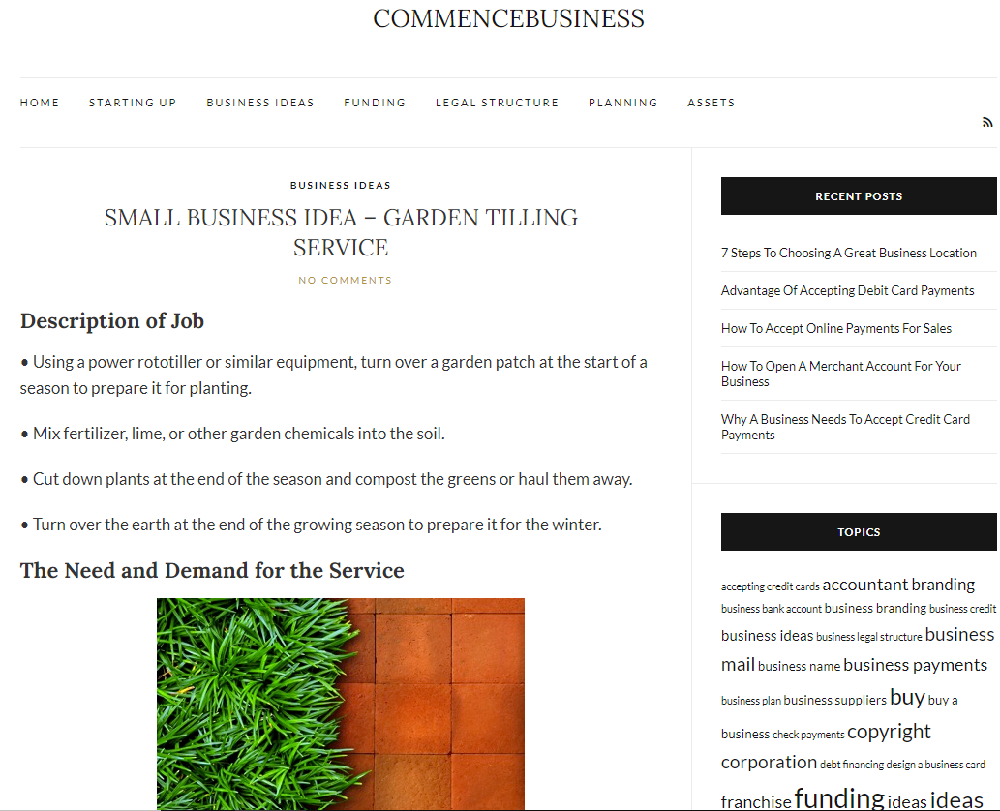

Secondary Source I: How to Start and Grow Your Lawn Care Maintenance Business
 This book title How to Start and Grow Your Lawn Care Maintenance Business has been an excellent read and definitely applicable to solving some of the solutions of our garden business. The subheading to the book is a personal favorite of mine: How to make a Bank Manager’s Salary by Operating a Lawn Business. In the chapter titled “Masterful Marketing,” the author Daniel Pepper lays out some great ideas on how to properly market a lawn business (Pepper 281). As outlined in our problem statement, we said that we are struggling to find our most effective marketing tool. Is it Facebook, Craigslist, or yard signs? Pepper says it does not necessarily matter which one is the most effective, what matters is that you hit all your marketing strategies hard. He says: “For those of you that won’t take this advice, you can run one-time ads but don’t bet your business on them” (Pepper 308). So, we are going to take that advice and in our solution outline how we are hitting Craigslist, Facebook, and yard signs all at the same time. Pepper also said that your business needs to have a cohesive marketing strategy (Pepper 286). There needs to be a similar message amongst all ads. So, we are going to run the same ad with the same description on Facebook and Craigslist. Unfortunately, the yard signs are already made. But we are going to tie them into this cohesive strategy by putting them up at Home and Garden suppliers. This will all be outlined more in detail on the solution page.
Pepper also said that it is key to be able to understand your numbers and customer information: “As an entrepreneur, make it part of your job to understand the numbers” (Pepper 433). Pepper recommends that you also download accounting software. But I think for this scenario our balance sheet accounts are so small that this is necessary. I think Access will be perfect for keeping customer information and keeping a running total. This will all be outlined more on the solutions page. Pepper says that you need to be able to analyze your data so it helps your business gain more insight into itself (Pepper 435). Using queries in access, we will be able to sort through big jobs, small jobs, jobs close to us, jobs far away, and date the job was performed.
Secondary Source II: Small Business Idea - Garden Tilling Service
 The website Commence Business laid out about ten business ideas on some business they thought anyone could start. One of those business ideas was a “Garden Tilling Service.” In the section titled “Challenged Faced by the Business Owner,” it says that Garden Tilling is a seasonal business mainly in the spring and that you need to amortize the cost of your machines (Small Business). This is something we have done – we have bought very expensive machines with the intention of using them for 10+ years. We have bought premium engine oil, gas siphons, and ethanol shields to keep our machines running like new. For marketing options, we have not considered, the site recommends to, “Post flyers and ads at community centers. Place ads in newspapers. Ask satisfied customers to recommend your services to others; offer a bonus or discount for new business they refer your way” (Small Business). We have not considered the idea of flyers and I think it is something we need to jump on. We could easily make them in Microsoft publisher. For the customers that recommend us to others and get the discount, we could put that information into access for the next year. Another problem we are having that was not mentioned in the problem statement is that we are sometimes going too far for some jobs. Commence Business recommends adding a small gas surcharge for the far distance.
Primary Source: Google Form Survey
- What is your full name?
- What is your phone number?
- How did you hear about us?
- From 1-10, how satisfied were you with our services?
- Can we text you about our services around this time next year?
- Any recommendations/comments?
For the primary research I created google form survey that asked the questions bulleted above. Below are the responses of 5 customers that we have serviced in the past week.
From the responses from the survey, we see that customers are very happy with our services. This was expected. We always do a good job and decline jobs that we think we will not do well. From this survey, we see that a majority of our hits are from craigslist, and none are from Facebook. I think it is time to ditch Facebook and focus solely on Craigslist and yard signs. Another purpose of this survey was to collect names and numbers – and it did it perfectly. 4/5 customers said we could contact them next, with the one not needing our services next year since he is planting grass. I plan on using this survey more in the future with other customers.
Insights
Insights are woven into each section summary.
Works Cited